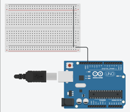
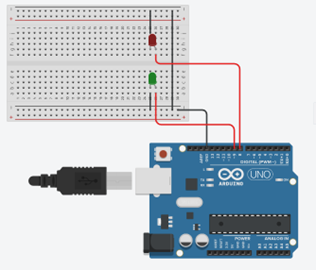
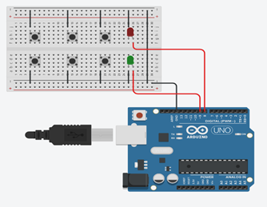
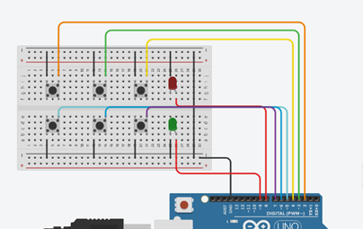
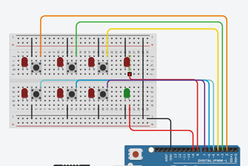
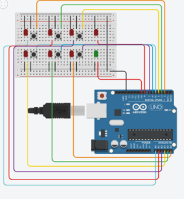

Combinatieslot
In deze project laat ik zien hoe je een combinatieslot kunt maken met een Arduino.
Benodigheden
- Arduino UNO
- Drukknop x6
- Rode x7
- Groene LED
- Jump Wires
- Breadboard
Doel
Het project zal ons helpen om het combinatiewachtwoord in te stellen en u kunt het wachtwoord instellen met behulp van 1-6 cijfers.Wanneer u op de knoppen drukt en de combinatie overeenkomt, gaat de groene LED branden en als de combinatie niet overeenkomt, gaat de rode LED geeft aan dat het wachtwoord onjuist is.
Stappenplan
-
Stap 1 : Breadbord
Verbind de Arduino met een breadbord
 -
Stap 2 : Rode & Groene LEDs
Verbind de rode en groene LEDs op pin 9 – 8
 -
Stap 3 : Knoppen met Grounding
Verbindt de 6 knoppen met de grounding
 -
Stap 4 : Knoppen met Pins
Verbind de 6 knoppen met de pins 2-7
 -
Stap 5 : De LEDs
Plaats de LEDs op de breadbord
 -
Stap 6 : LEDs met pins
Verbind de LEDs met de pins A0 – A5
 -
Stap 7 : Code
Kopieer het code en test het project even uit
Code
- 2 - 6 mei: Idee bedenken en proberen
- 9 - 13 mei: 2de idee bedenken en proberen
- 16 - 20 mei: 2de idee volledig uitwerken tot een prachtige project
- 23 - 27 mei: Word-doc invullen en website maken